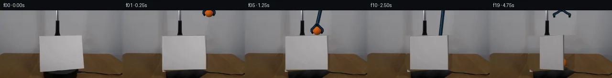

![首帧]()

Round 00
2026-11-04T19:44:22.443491+00:00像素候选变化代码 +306/−0inspection 更新
pixels b2f1cb960f998d54 · code 6df62672ff864a0c
查看本轮 generate.py 真实 diff
--- previous/generate.py
+++ current/generate.py
@@ -0,0 +1,306 @@
+#!/usr/bin/env python3
+"""Generate the 20-frame PixelWorld-Text continuation using local pixel operations."""
+
+from __future__ import annotations
+
+import hashlib
+from pathlib import Path
+
+import cv2
+import numpy as np
+from PIL import Image, ImageDraw
+
+from artifact_io import save
+
+
+ROOT = Path(__file__).resolve().parent
+W, H = 256, 144
+S = 4
+EXPECTED_SOURCE_SHA256 = "6890675a93be0e8a6a8088f0780119c04085e0b7a10a31f1a5a0ba4443ec1cd9"
+
+
+def smoothstep(v: float) -> float:
+ v = max(0.0, min(1.0, v))
+ return v * v * (3.0 - 2.0 * v)
+
+
+def rgba_over(rgb: np.ndarray, layer: np.ndarray) -> np.ndarray:
+ """Alpha-composite a uint8 RGBA layer over a uint8 RGB image."""
+ alpha = layer[..., 3:4].astype(np.float32) / 255.0
+ out = rgb.astype(np.float32) * (1.0 - alpha) + layer[..., :3].astype(np.float32) * alpha
+ return np.clip(np.rint(out), 0, 255).astype(np.uint8)
+
+
+def downsample_rgba(layer4: np.ndarray) -> np.ndarray:
+ return np.asarray(Image.fromarray(layer4, "RGBA").resize((W, H), Image.Resampling.LANCZOS))
+
+
+def make_clean_plate(source: np.ndarray) -> np.ndarray:
+ """Numerically inpaint the original cardstock footprint and rebuild its platform."""
+ plate = source.copy().astype(np.float32)
+ old_mask = np.zeros((H, W), np.uint8)
+ cv2.fillPoly(
+ old_mask,
+ [np.array([(80, 54), (177, 52), (177, 123), (164, 130), (90, 130), (81, 123)], np.int32)],
+ 255,
+ )
+ soft = cv2.GaussianBlur(old_mask, (0, 0), 0.8).astype(np.float32) / 255.0
+
+ fill = source.copy().astype(np.float32)
+ rng = np.random.default_rng(5005)
+ noise = rng.normal(0.0, 0.9, (H, W, 1)).astype(np.float32)
+
+ for y in range(52, 131):
+ if y <= 91:
+ # Background color is estimated independently for every scanline from
+ # exposed samples immediately to the left and right of the panel.
+ left = np.median(source[y, 60:78], axis=0).astype(np.float32)
+ right = np.median(source[y, 181:202], axis=0).astype(np.float32)
+ for x in range(78, 181):
+ u = (x - 78) / 102.0
+ fill[y, x] = left * (1.0 - u) + right * u + noise[y, x]
+ else:
+ # Continue real source wood grain from the exposed left tabletop.
+ for x in range(78, 181):
+ sx = int(round((x - 78) * 0.72)) % 78
+ sample = source[y, sx].astype(np.float32)
+ # Small illumination correction toward the exposed right side.
+ right = np.median(source[y, 184:215], axis=0).astype(np.float32)
+ left = np.median(source[y, 48:76], axis=0).astype(np.float32)
+ u = (x - 78) / 102.0
+ fill[y, x] = sample + 0.32 * u * (right - left) + noise[y, x]
+
+ plate = plate * (1.0 - soft[..., None]) + fill * soft[..., None]
+
+ # The upper surface/front lip of the black platform was hidden by the source
+ # cardstock. Reconstruct it as a softly antialiased, textured trapezoid.
+ yy, xx = np.mgrid[0:H, 0:W]
+ platform_mask4 = Image.new("L", (W * S, H * S), 0)
+ pd = ImageDraw.Draw(platform_mask4)
+ pd.polygon([(91*S, 130*S), (161*S, 124*S), (181*S, 131*S),
+ (160*S, 144*S), (92*S, 144*S)], fill=255)
+ pm = np.asarray(platform_mask4.resize((W, H), Image.Resampling.LANCZOS), dtype=np.float32) / 255.0
+ depth = np.clip((yy - 124) / 18.0, 0.0, 1.0)
+ side = 4.0 * np.sin((xx - 91) * 0.19) + 2.0 * np.sin((xx + yy) * 0.37)
+ lum = np.clip(38.0 - 31.0 * depth + side, 3.0, 45.0)
+ platform = np.stack([lum, lum * 0.94, lum * 0.93], axis=2)
+ plate = plate * (1.0 - pm[..., None]) + platform * pm[..., None]
… diff truncated; 219 more lines …